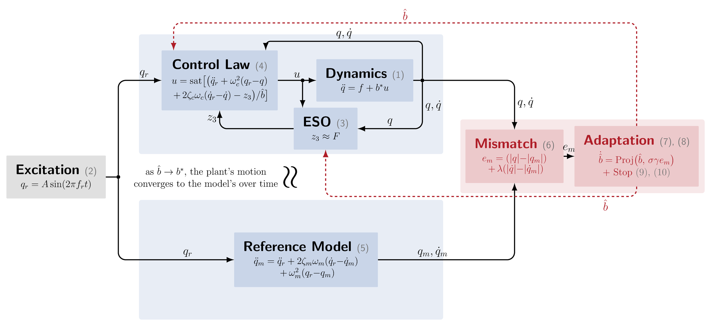
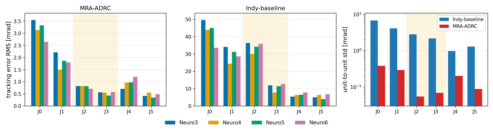
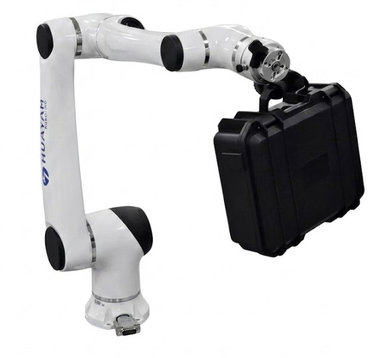

Abstract
Active disturbance rejection control (ADRC) reduces model dependence by estimating and compensating for lumped disturbances online, but its control-input gain b0 must still be supplied by the designer and is typically tuned manually for each joint. This paper proposes a model-reference adaptive ADRC (MRA-ADRC) framework for automatic on-machine commissioning of b0 in robot manipulators. During a bounded sinusoidal calibration motion, the plant response is compared with a reference model through an absolute-value position–velocity mismatch, and the resulting scalar adaptation updates b0 without a model-derived regressor or torque sensing. A cycle-envelope dead-zone terminates the adaptation automatically once the response mismatch remains below a prescribed level. The analysis establishes uniformly ultimately bounded tracking on an analytical safe set, local exponential convergence of the averaged gain estimate to a residual-shifted equilibrium, and a stopping-error bound linear in the dead-zone width. On a 6-DOF Neuromeka Indy7 the method turns a coarse initial estimate into a commissioned gain profile and recovers 88% of the tracking degradation caused by the initial gain mismatch. The profile transfers without retuning across units of the same model, where it tracks better than the deployed production controller under a payload absent at commissioning, and the procedure commissions all six joints of a manipulator from a different manufacturer with the same closed-loop benefit. With the ADRC loop held fixed, the commissioned gain improves tracking severalfold over an over-estimated one on both arms, including on a Cartesian straight-line task.
Method

-
One gain left to the designer
The extended state observer of ADRC estimates and cancels the lumped disturbance, yet the control-input gain b0 is still supplied by hand and is usually tuned joint by joint.
-
Reference-model mismatch
During a bounded sinusoidal calibration motion a reference model runs on the same excitation. The absolute-value position–velocity mismatch between plant and model tells whether the current estimate is too high or too low.
-
Scalar adaptation
That scalar signal updates b̂ online. No model-derived regressor and no torque sensing are required, and b̂ is the only signal returned to the ADRC loop.
-
Automatic stop
A cycle-envelope dead-zone freezes b̂ once the mismatch stays below a prescribed level for two consecutive cycles. On the Indy7 each joint stops within 20 to 57 seconds.
What the analysis guarantees
- Uniformly ultimately bounded tracking on an analytical safe set of gain estimates.
- Local exponential convergence of the averaged gain estimate to a residual-shifted equilibrium.
- A stopping-error bound that is linear in the dead-zone width.
Contributions
- An online gain-commissioning law that adds model-reference adaptation to the ADRC loop, with proofs of bounded tracking, local convergence and stopping accuracy.
- A fully automatic commissioning procedure whose profile transfers across units of the same model, so one run for each model replaces the unit-by-unit factory tuning pass.
- Hardware validation of the closed-loop benefit, namely better tracking than the deployed production controller under a 4.5 kg payload absent at commissioning, at matched actuator effort.
- Validation on multiple Indy7 units, a URDF-matched simulation, and a second manufacturer's Elfin E10-L, where the full procedure commissions all six joints automatically.
- An evaluation that holds the ADRC loop fixed and changes only the gain, isolating the contribution of commissioning itself, on both arms and on a Cartesian straight line.
Results
Commissioning on the machine


One profile, four units, 4.5 kg payload

Same ADRC loop, only the gain changes
The closed-loop comparisons above mix the commissioned gain with the observer. This evaluation holds the ADRC loop fixed and swaps only b0, with a joint PID loop as a reference, under the 4.5 kg payload. Joint entries are quadratic means over the six joints, the tool error is measured on the Cartesian line, and torque is the commanded RMS on the square.
| Arm | Controller | Square mrad |
Line mrad |
Tool RMS mm |
Tool max mm |
Torque N·m |
|---|---|---|---|---|---|---|
| Indy7 | PID baseline | 6.61 | 3.71 | 4.44 | 6.20 | 42.9 |
| ADRC, b0 = 1.0 (uncommissioned) | 10.69 | 1.63 | 2.06 | 7.59 | 44.5 | |
| MRA-ADRC | 1.54 | 0.42 | 0.45 | 2.55 | 42.7 | |
| Elfin E10-L | PID baseline | 41.28 | 53.92 | 128.06 | 168.77 | 50.2 |
| ADRC, 4× commissioned b0 | 0.88 | 0.57 | 0.59 | 2.95 | 49.3 | |
| MRA-ADRC | 0.43 | 0.22 | 0.18 | 0.87 | 49.5 |


Platforms


Both arms run in torque mode at the joint level. The commissioning procedure, including the hardware floor measurement, was run end to end on both, and the same closed-loop evaluation was repeated on each.
BibTeX
@article{mraadrc2026,
title = {Model-Reference Adaptive Active Disturbance Rejection Control
for Online Control-Gain Commissioning of Robot Manipulators},
author = {Anonymous Author(s)},
journal = {Under review},
year = {2026}
}